Teach a frozen Vision Transformer a new task by learning only a few extra input vectors.
Menglin Jia, Luming Tang, Bor-Chun Chen, Claire Cardie, Serge Belongie, Bharath Hariharan, Ser-Nam Lim
Cornell University, Meta AI and University of Copenhagen. ECCV 2022.
Presented by Ertugrul Senturk October 2026
Pretrain one big model once, then adapt it to each task
ImageNet-21k14 million photos in 21,000 everyday categories. Pretraining takes weeks and is done once, by Google.
ViT-B/16A Vision Transformer with 85.8 million weights that has learned general visual features.
Fine-grained categories200 bird species, 196 car models
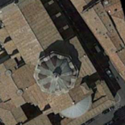
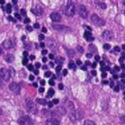
Satellite and microscopeland use from above, tissue slides
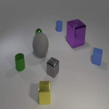
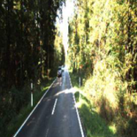
Counting and distancehow many objects, how far away
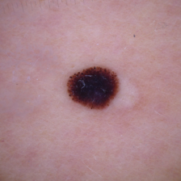
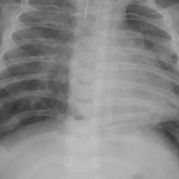
Medical imagesmy own experiments, shown later
Each new task is small: most tasks in the paper have only 1,000 training images, far too few to train from scratch. So we start from the pretrained model and adapt it.
The paper asks how to adapt it best: accurately, and cheaply enough to store for every task. Next, the standard answer and what it costs, then the cheaper methods tried before VPT.
Dataset examples from Jia et al. 2022, Fig. 10. ViT-B/16: Dosovitskiy et al. 2021. The pretrained checkpoint used here and in the paper is Google's ImageNet-21k ViT-B/16.
Full fine-tuning stores a new copy of the model per task
Full fine-tuning retrains every weight of the pretrained model on the new task, and it is usually the most accurate option. The cost is that each task keeps its own retrained copy, so storage grows with every task and with the size of the model.
Model size
343 MB
345 MB
32-bit weights: ViT-B/16 85.8M, ViT-L/16 303M, ViT-H/14 632M. A VPT file is 50 prompts at every layer plus a 102-class head. Squares are sized by area.
Cheaper methods existed, but none matched full fine-tuning
Bias came closest and even beat full fine-tuning on 8 of the 24 tasks, but on average no cheaper method reached it. VPT takes a third route: it leaves the model alone and changes the input.
Mean test accuracy over the paper's 24 tasks, ViT-B/16 (Jia et al. 2022, Table 1, mean of the four group averages). The right column is the share of weights trained for each task.
Where the word "prompt" comes from
2020GPT-3
Classifythesentiment:prompt: words a person chose
thefilmwasgreatinput
→
frozen language model
→
positive
2021Prompt tuning
prompt: learned vectors, no words
thefilmwasgreatinput
→
frozen language model
→
positive
In 2020, a prompt was text. GPT-3, a frozen model with 175 billion weights, was only trained to continue text, yet it does a new task when you type a description of the task in front of the input. Not a single weight changes. But words are discrete, so the only way to improve a prompt is trial and error.
In 2021, prompt tuning (Lester et al.) replaced the words with learned vectors that correspond to no word. They are trained by gradient descent on the task's examples while the model stays frozen, and they are all you store per task. Prefix-tuning (Li & Liang) does the same at every layer.
The sentiment example is illustrative. Brown et al. 2020 (GPT-3); Lester, Al-Rfou, Constant 2021 (prompt tuning, T5); Li & Liang 2021 (prefix-tuning).
How a Vision Transformer reads an image
A fixed grid cuts the image into 196 patches of 16 × 16 pixels, and each patch, read row by row, becomes a vector of 768 numbers. One extra vector, [CLS], goes in front to collect a summary of the whole image: the 12 layers mix all 197 vectors, and the head reads only [CLS] to name the class.
The layers only see a sequence of vectors, so we can add a few more.
ViT-B/16: 12 layers, vectors of 768 numbers, 85.8 million weights. Dosovitskiy et al., ICLR 2021. Image: a melanoma from DermaMNIST, 224 × 224 pixels.
A visual prompt is the same idea applied to image patches
LanguageLester et al. 2021
thefilmwasgreat
→
frozen language model
→
positive
learned prompt: random at first, trained for the task, same for every input
↑“the film was great”
VisionJia et al. 2022
…
→
frozen Vision Transformer
→
melanoma
learned prompt: random at first, trained for the task, same for every image
↑all 196 patches of the image
The grey vectors come from the input, as before. The red ones do not: they start as random numbers, are trained on the task's examples while the model stays frozen, and are then put in front of every input of that task. A visual prompt is therefore not text and not a pattern painted on the pixels, only learned numbers in the model's input space.
In language, prompt tuning matched full fine-tuning only once the model had about 10 billion weights. VPT beats full fine-tuning on 20 of 24 tasks with an 86-million-weight ViT-B.
Lester et al. 2021 (T5); Jia et al. 2022, Table 1. Not to be confused with CoOp (Zhou et al. 2021, text prompts for CLIP) or Bahng et al. 2022 (a pixel pattern).
VPT trains a few extra input vectors and the head
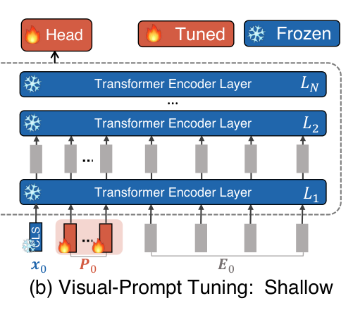
Figures: Jia et al. 2022, Fig. 2. Equations (6) and (8) of the paper: x class token, E patch vectors, P prompts, Z the prompt positions after a layer, Li layer i.
Why a few extra tokens can steer a frozen network
In every layer, each token takes in information from all the other tokens; this is attention. With prompts in the sequence, [CLS] and every patch also take in information from the prompts.
So training the prompts changes what the frozen network computes, without changing a single weight.
Mechanism: Sec. 3 of Jia et al. 2022; Appendix B relates it to prefix-tuning ("VPT-prefix"). Line widths and the red share of [CLS] are illustrative, not measured.
How much VPT trains and stores per task
N · p · d= 12 × 50 × 768 =460,800prompt numbers, plus 78,438 for a 102-class head
Numbers trained and stored per task
Full fine-tuning
all 85.8 million weights, retrained for this task
343 MB100%
VPT-deep
the same 85.8 million weights, frozen and shared by every task
2.2 MB0.63%
Compute per image
Plain ViT
197 tokens
1.00×
VPT-deep
197 tokens
1.27×+50 prompt tokens
Prompt length p
More prompts keep the file small, but every image carries them through all 12 layers.
ViT-B/16, N = 12 layers, d = 768, 32-bit numbers. Compute counts multiply-adds per layer for n tokens (12nd² + 2n²d). The paper measures about 2× test latency at p = 200 (Jia et al. 2022, Table 12).
VPT in code: a few lines and one new hyperparameter
# VPT-deep on a frozen ViT-B/16, simplified from demo/vpt/vpt_model.pyvit = timm.create_model(BACKBONE, pretrained=True) # ImageNet-21k ViT-B/16vit.requires_grad_(False) # backbone frozenprompts = nn.Parameter(torch.empty(12, p, 768).uniform_(-b, b)) # trained: 12 layers × p × 768head = nn.Linear(768, num_classes) # trained: the classifierdef forward(img): x = vit._pos_embed(vit.patch_embed(img)) # [CLS] + 196 patch vectors for i, layer in enumerate(vit.blocks): rest = x[:, 1:] if i == 0 else x[:, 1 + p:] # drop last layer's prompts P = prompts[i].expand(len(x), -1, -1) # this layer's prompts x = layer(torch.cat([x[:, :1], P, rest], dim=1)) # frozen layer on [CLS, P, rest] return head(vit.norm(x)[:, 0]) # classify from [CLS]
The prompts start random, with Xavier-uniform values as in the official code. The paper tried smarter starts, such as class prototypes, and random did as well or better.
Training is plain SGD with momentum for 100 epochs on a cosine schedule. Learning rate and weight decay are picked on a validation split, for every method alike.
The one new hyperparameter is the prompt length p, chosen per task from {1, 5, 10, 50, 100, 200} on the validation split.
Recipe: Jia et al. 2022, Sec. 4.1 and Appendix A. Code is my re-implementation, which reproduces the paper's Oxford Flowers result (99.1% vs the paper's 99.0%).
The paper tests VPT on 24 very different tasks
CUB-200Oxford FlowersStanford CarsStanford Dogs
FGVC, 5 tasks
Fine-grained categories, such as 200 bird species, with thousands of training images.
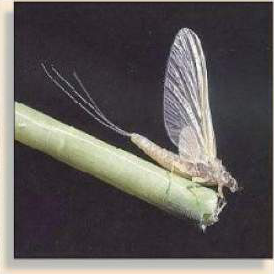
Caltech101
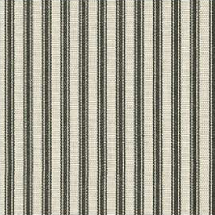
DTDOxford PetsSUN397
VTAB Natural, 7 tasks
Ordinary photos of objects, textures, animals and scenes, close to the pretraining data.
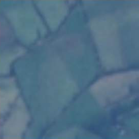
EuroSAT
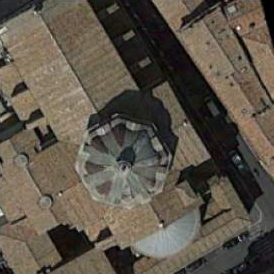
Resisc45
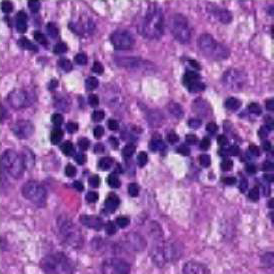
Patch Camelyon
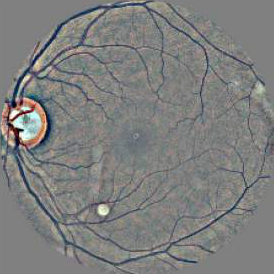
Retinopathy
VTAB Specialized, 4 tasks
Images from special sensors: satellites, tissue slides under a microscope, and retina cameras.
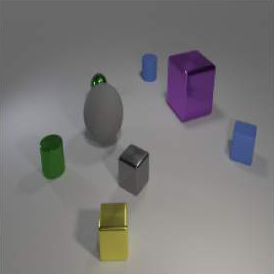
CLEVR countdSprites location
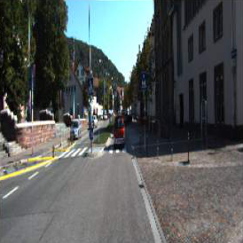
KITTI distanceSmallNORB azimuth
VTAB Structured, 8 tasks
Geometry instead of categories, such as counting objects or judging distance.
All 24 tasks use the same frozen ViT-B/16, pretrained on ImageNet-21k. The 19 VTAB tasks have only 1,000 training images each.
Images: Jia et al. 2022, Fig. 10, four example tasks per group. VTAB-1k: Zhai et al. 2019.
VPT-deep beats full fine-tuning on 20 of 24 tasks
Jia et al. 2022, Table 1 and Tables 13–14: ViT-B/16 pretrained on ImageNet-21k, mean test accuracy within each group. For all 24 tasks, the mean of the four group averages.
VPT leads with little data and stays ahead with more
VPT-deep against
Jia et al. 2022, Fig. 3: ViT-B/16, mean test accuracy over the five FGVC tasks, each method trained on a share of every task's training images. The paper gives these values only as a figure; they were read from its vector drawing in the PDF, and the 100% points match Table 1.
The result holds for larger backbones too
VTAB group
Jia et al. 2022, Fig. 4: VTAB-1k, mean test accuracy per group, backbones pretrained on ImageNet-21k. The paper gives these values only as a figure; they were read from its vector drawing in the PDF, and the ViT-B points match Table 1.
Four places to put the prompt
Numbers from Jia et al. 2022, Fig. 5 (ViT-B/16, prompts in the first layer only); "All four" is the mean of the three groups. Diagrams redrawn.
How many prompts, and at which layers
With prompts, the same frozen network separates the classes
Linear probe
frozen network, no prompts
VPT-deep
same frozen network, with prompts
Full fine-tuning
every weight retrained
Each dot is one test image, coloured by its true class; the number is test accuracy. With the frozen features alone, the classes overlap. With prompts, the same frozen network produces clearly separated groups, so a simple linear head can tell them apart.
t-SNE maps of the final [CLS] vector, test set, from Jia et al. 2022, Fig. 9. Accuracies from Fig. 9 and Table 13.
Where VPT falls short
VPT saves storage, not training memory or inference time
My experiments
I re-implemented VPT and trained it on three medical imaging datasets from MedMNIST. A linear probe and full fine-tuning ran next to it, all three starting from the paper's ViT-B/16.
First the results, then all three models running live in this browser.
Skin lesions
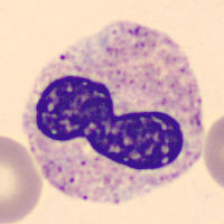
Blood cells
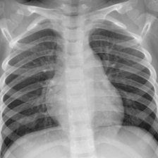
Chest X-rays
I tested VPT on three medical datasets
Each one was trained twice: on 1,000 images, as in the paper's VTAB-1k, and on its full training set.
melanoma
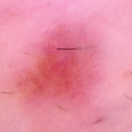
nevus
Skin lesions
Dermoscopy, 7 classes
1,000 or all 7,007 training images
neutrophil
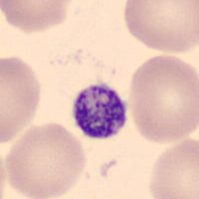
platelet
Blood cells
Microscopy, 8 cell types
1,000 or all 11,959 training images
normalpneumonia
Chest X-rays
Radiographs, pneumonia or normal
1,000 or all 4,708 training images
head
ViT-B/16 frozen
Linear probe
Trains only a new head.
head
ViT-B/16 frozen
VPT-deep
Trains a head and 50 prompts per layer.
head
ViT-B/16 retrained
Full fine-tuning
Retrains all 85.8 million weights.
MedMNIST+ at 224 × 224 (Yang et al. 2023); skin lesions from HAM10000 (Tschandl et al. 2018). Trained on an RTX 5070 Ti laptop GPU with the paper's recipe: SGD for linear probe and VPT, AdamW for full fine-tuning, learning rate picked on validation.
VPT always beat the linear probe and came close to full fine-tuning
My runs: ViT-B/16 (ImageNet-21k), MedMNIST+ 224 × 224, balanced accuracy on the test set (the mean per-class recall: on skin lesions, always answering "nevus" scores 67% accuracy but only 14% balanced accuracy), bars start at 0. Each method was trained once with 1,000 images and once with the full training set; there are no points in between.
What each method costs on skin lesions
Live demo: one image, three models
Pick a test image below, or drop your own here
Linear probe
shared frozen model + head
VPT-deep
shared frozen model + prompts
Full fine-tuning
its own retrained model
All three start from the same ViT-B/16, pretrained on ImageNet-21k. Linear probe and VPT-deep share one frozen copy of it; full fine-tuning runs its own retrained copy.
Not connectedResearch demo, not a diagnostic tool
Summary
0.6%
of the weights are trained: a few vectors among the patch tokens and a small head, while the Transformer stays frozen.
20of 24
tasks where VPT-deep beat full fine-tuning, on a ViT-B pretrained with labels.
99.4%
less storage per task than a fully fine-tuned copy: 2.2 MB instead of 343 MB. Training memory and inference time are not saved.
–
average balanced accuracy on my three medical datasets.
Jia et al. 2022, Table 1 (24 tasks, ViT-B/16) and Table 12 (memory, test time); 0.6% is VPT-deep with 50 prompts and a 102-class head. Medical datasets: my runs, balanced accuracy on the test set.
Brown et al. 2020.Language models are few-shot learners (GPT-3). NeurIPS.
Lester, Al-Rfou & Constant 2021.The power of scale for parameter-efficient prompt tuning. EMNLP.
Li & Liang 2021.Prefix-tuning: optimizing continuous prompts for generation. ACL.
Zhou et al. 2021.Learning to prompt for vision-language models (CoOp). arXiv:2109.01134; IJCV 2022.
Bahng et al. 2022.Exploring visual prompts for adapting large-scale models. arXiv:2203.17274.
Parameter-efficient methods
Houlsby et al. 2019.Parameter-efficient transfer learning for NLP (Adapter). ICML.
Ben Zaken, Goldberg & Ravfogel 2022.BitFit: simple parameter-efficient fine-tuning for Transformer-based masked language-models (Bias). ACL.
Zhang et al. 2020.Side-tuning: a baseline for network adaptation via additive side networks (Sidetune). ECCV.
Hu et al. 2022.LoRA: low-rank adaptation of large language models. ICLR.
Models
Dosovitskiy et al. 2021.An image is worth 16×16 words: Transformers for image recognition at scale (ViT). ICLR.
Liu et al. 2021.Swin Transformer: hierarchical vision Transformer using shifted windows. ICCV.
Chen, Xie & He 2021.An empirical study of training self-supervised vision Transformers (MoCo v3). ICCV.
He et al. 2022.Masked autoencoders are scalable vision learners (MAE). CVPR.
Zheng et al. 2021.Rethinking semantic segmentation from a sequence-to-sequence perspective with Transformers (SETR). CVPR.
Chen et al. 2018.Encoder-decoder with atrous separable convolution for semantic image segmentation (DeepLab v3+). ECCV.
Datasets
Zhai et al. 2019.A large-scale study of representation learning with the visual task adaptation benchmark (VTAB). arXiv:1910.04867.
Zhou et al. 2019.Semantic understanding of scenes through the ADE20K dataset. IJCV.
Yang et al. 2023.MedMNIST v2: a large-scale lightweight benchmark for 2D and 3D biomedical image classification. Scientific Data.
Tschandl, Rosendahl & Kittler 2018.The HAM10000 dataset, a large collection of multi-source dermatoscopic images of common pigmented skin lesions. Scientific Data.